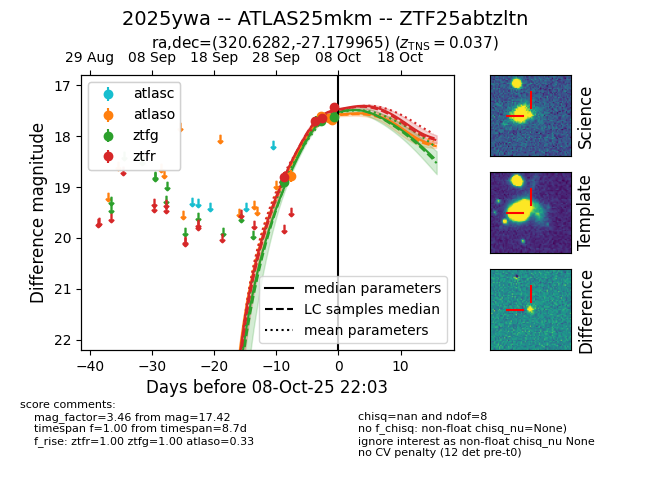
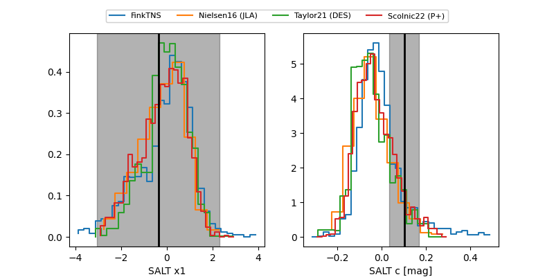

FINK: ZTF25abtzltn
Lasair: ZTF25abtzltn
ALeRCE: ZTF25abtzltn
TNS: 2025ywa
YSE: 2025ywa
ZTF25abtzltn (ztf,fink)
2025ywa (tns,yse)
ATLAS25mkm (atlas)
equatorial (ra, dec) = (320.6282,-27.17997)
galactic (l, b) = (20.2612,-43.88330)


last atlaso=17.68, ztfg=17.62, ztfr=17.42
4 atlaso, 4 ztfg, 4 ztfr detections